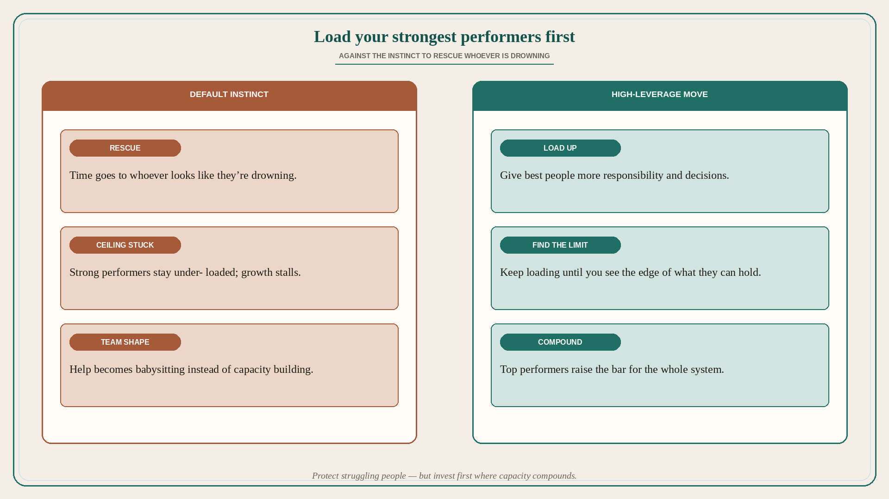

Load your strongest performers first
Source: Lenny Rachitsky / Peter Sellis (@lennysan)
original post
What it claims
Against human instinct — which is to help whoever looks like they are drowning — load your strongest performers with more responsibility and decisions until you find the limit of what they can handle. Spend your scarce coaching and trust capital where capacity compounds, not only where distress is loudest.
Why it matters for a PO
POs and leads default to firefighting: the struggling teammate, the noisy stakeholder, the failing workstream. That feels humane and keeps the ceiling low. High performers stay under-challenged; the system never raises its bar. Loading the strongest first is not abandoning strugglers — it is choosing where your limited attention multiplies outcomes.
3 takeaways
- Audit where your last two weeks of 1:1 and decision time went — drowning vs. compounding.
- Give your best people a bigger decision surface before you hire or reorganize around gaps.
- Keep loading until you see the edge; under-loading top performers is a silent tax.
Practice this week
Name your two strongest collaborators (eng, design, or another PO). Give each one additional decision they currently escalate to you — with a clear success bar and a check-in date. Protect a smaller, scheduled slot for people who need support, so rescue does not eat the whole week.